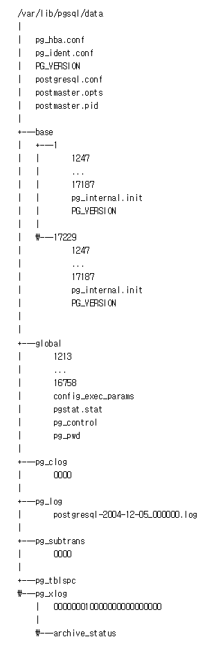

설치 및 설정 변경
PostgreSQL 디렉토리 구조
-
PostgreSQL 는 어떤 디렉토리 구조를 가지고 있는지 알아보자.
-
PostgreSQL 은 Unix 시스템에서 기본적으로 /usr/local/pgsql 또는 /var/lib/pgsql 에 설치된다.
-
Windows 시스템에서는 C:\Program Files\PostgreSQL\ 에 설치된다.
디렉토리 구조

-
PostgreSQL 에서 사용되는 configuration 파일 및 데이터 파일은 PGDATA 으로 불리며, data 디렉토리(/var/lib/pgsql/data) 하위에 저장된다.
-
위 그림에 표시된 것처럼 PGDATA 에는 여러 개의 하위 디렉토리가 있으며, 각각 그 역할이 있다. 그 중 중요한 디렉토리는 몇 가지만 알아보겠다.
-
base 디렉토리에는 Database 의 OID 이름을 가진 서브 디렉토리가 있다. 이 디렉토리는 데이터베이스 파일의 기본 위치이다. 특히 시스템 카탈로그가 여기에 저장된다.
-
pg_tblspc 디렉토리는 각 Tablespace 의 물리적 위치를 가리키는 링크 파일이 있다. 이 링크의 이름은 Tablespace OID 에 따라 지정된다.
물리적인 Tablespace 디렉토리에는 PG_9.5_201510051 이라는 서브 디렉토리가 있다.
처음으로
이전
다음